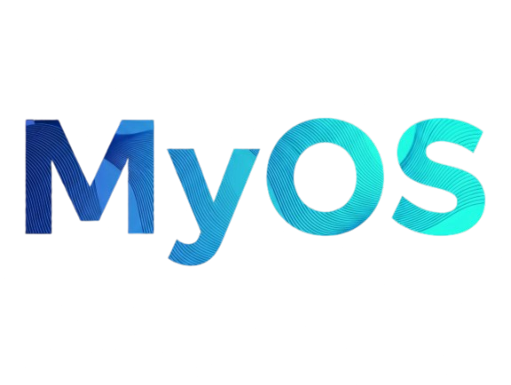

MyOS Gallery



MyOS x64Oyun, üretim ve sistem yönetimi için hazırlanmış; özel kernel, BTRFS snapshot altyapısı, ZRAM, MyOS Tools ve tek tık sistem panelleriyle gelen performans odaklı Linux dağıtımı.
A performance-focused Linux distribution built around a custom kernel, BTRFS snapshot tooling, ZRAM, MyOS Tools, and one-click system management panels for gaming and production workloads.
MyOS'u farklı yapan tek şey indirme butonu değil; özel kernel hattı, hafif bellek yönetimi, BTRFS snapshot zinciri ve tek tık yönetim araçlarının birlikte çalışmasıdır.
What makes MyOS different is not just the download button; it is the way the custom kernel line, lightweight memory handling, the BTRFS snapshot chain, and one-click management tools work together.
MyOS, standart jenerik çekirdek yerine kendi kernel hattını kullanır. BORE scheduler, gömülü depolama sürücüleri ve düşük gecikme odaklı yapı sayesinde live ortamdan kurulu sisteme kadar daha sağlam bir açılış zinciri hedeflenir.
MyOS uses its own kernel line instead of a generic distribution kernel. With the BORE scheduler, built-in storage drivers, and a low-latency-oriented setup, it aims for a more reliable boot path from the live medium to the installed system.
Sistem hafif tutulur; ZRAM ve düzenli servis seti sayesinde çoklu görevde daha dengeli tepki verir. Amaç sadece yüksek FPS değil, masaüstünde de kısa tepki süreleri üretmektir.
The system stays lightweight; with ZRAM and a disciplined service set, it reacts more consistently under multitasking. The goal is not only higher FPS, but also shorter response times on the desktop.
Kurulum sırasında BTRFS seçildiğinde yapı sadece format atmaz; alt birimleri, Snapper akışı ve grub-btrfs görünürlüğünü birlikte düşünür. Böylece geri dönüş ve bakım daha kontrollü hale gelir.
When BTRFS is selected during installation, the setup does more than format a disk; it aligns subvolumes, the Snapper flow, and grub-btrfs visibility together for a more controlled rollback and maintenance path.
MyOS yalnızca oyunculara değil, geliştirme yapanlara da hazır gelir. Base-devel, Python, Go ve sistem araçları sayesinde C/C++, script ve araç geliştirme için başlangıç zemini kurulu olur.
MyOS is not only for gamers; it also comes ready for development work. With base-devel, Python, Go, and system tools, it provides a solid starting point for C/C++, scripting, and utility development.
Plasma 6 masaüstü, Mission Center, Discover/Bazaar ve MyOS'e özel tema ayarları birlikte gelir. Hedef, live ortamdan itibaren temiz ama araçsız olmayan bir masaüstü deneyimidir.
The stack ships with Plasma 6, Mission Center, Discover/Bazaar, and MyOS-specific theme defaults. The goal is a desktop that feels clean from the live session onward without being bare.
Live sistemde varsayılan kullanıcı adı ve parola myos olarak ayarlıdır. Kurulum masaüstü kısayolu veya myos-kur ile başlatılır; yetki isteyen adımlarda parola yine myos'tur.
In the live system, the default username and password are both myos. Installation starts through the desktop shortcut or myos-kur; whenever elevated privileges are requested, the password remains myos.
MyOS'u farklılaştıran katman burada başlıyor: yalnızca bir masaüstü değil, kendi araç zinciriyle gelen kurulum, bakım ve performans akışı.
This is where MyOS separates itself: not just a desktop, but an installation, maintenance, and performance flow that ships with its own toolchain.
İlk açılış yardımcısıdır. Kullanıcıyı tema, kısa yollar ve temel sistem ekranlarına taşır; Control Center ve Package Installer için hızlı geçiş noktası sunar.
The first-boot helper. It guides users toward themes, shortcuts, and core system screens while acting as a fast launcher for Control Center and Package Installer.
MyOS'un merkezi komuta panelidir. Normalde terminalden ve farklı araçlardan yapılacak DNS profili değiştirme, güvenlik odaklı DNS seçimi, firewall ve NetSec ile riskli ya da istenmeyen IP'leri engelleme, güç profilleri arasında geçiş, kernel seçme ve güncelleme, GPU tweak ve I/O Boost gibi performans ayarları burada tek yerde toplanır. Amaç yalnızca ayar göstermek değil; sistemi daha hızlı, daha güvenli ve günlük kullanımda daha kolay yönetilir hale getirmektir.
It is the central command panel of MyOS. Tasks that would normally be scattered across terminal commands and multiple utilities are collected in one place: switching DNS profiles, selecting privacy-focused DNS options, blocking risky or unwanted IP ranges through firewall and NetSec, changing power profiles, selecting and updating kernels, and tuning performance options such as GPU tweaks and I/O Boost. The goal is not just to expose settings, but to make the system faster, safer, and easier to manage every day.
Oyuncu tarafında daha akıcı deneyim hedefleyen performans aracıdır. Gamescope tabanlı çözünürlük ölçekleme ile oyunu daha verimli çalıştırmaya çalışır; FSR ve NIS desteğiyle daha düşük iç çözünürlükten daha temiz görüntü üretmeyi hedefler. Steam açılış akışına bağlanabilir, MangoHud ile FPS, frametime, sıcaklık ve sistem yükünü canlı gösterebilir, GameMode ile kaynak önceliğini oyuna verebilir. Kısacası sadece görüntü büyütme değil, daha stabil FPS ve daha kontrollü bir oyun oturumu sunmayı amaçlar.
It is a gaming performance utility built around smoother play. With Gamescope-based scaling it tries to run games more efficiently, while FSR and NIS support aim to deliver a cleaner image from a lower internal resolution. It can hook into the Steam launch flow, show live FPS, frametime, temperatures, and system load through MangoHud, and use GameMode to prioritize resources for the game. In short, it is not just about scaling the image, but about delivering more stable frame rates and a more controlled gaming session.
MyOS Installer, mevcut Windows ve Linux kurulumlarını algılayabilir; seçtiğiniz bölümü küçültüp MyOS için yeni alan ayırarak yanına kurulum yapabilir. Kurulum sonunda mevcut EFI yapısını koruyup diğer sistemleri GRUB menüsüne dahil edecek şekilde tasarlanmıştır.
MyOS Installer can detect existing Windows and Linux installations, shrink a selected partition, and carve out new space for a side-by-side MyOS install. It is designed to preserve the existing EFI layout and include other systems in the GRUB boot menu at the end of setup.
Yeni kurulum sonrası en çok vakit kaybettiren adımlardan biri olan uygulama toparlama işini kısaltmak için hazırlanmış kurulum merkezidir. Günlük araçlar, medya, ofis, mağaza, oyun ve sistem yazılımları kategorilere ayrılmış şekilde sunulur; böylece kullanıcı rastgele paket aramak yerine daha seçilmiş ve daha mantıklı bir uygulama listesiyle ilerler. Amaç, temiz kurulumdan kullanılabilir masaüstüne geçiş süresini kısaltmak ve temel yazılımları daha düzenli şekilde kurdurmaktır.
It is an installation hub designed to shorten one of the most time-consuming parts of a fresh setup: rebuilding your application stack. Daily tools, media, office, store, gaming, and system software are presented in organized categories, so instead of hunting random package names, the user moves through a more curated and practical list. The goal is to reduce the time between a clean install and a fully usable desktop while keeping core software deployment more organized.
MyOS araçları derlenmiş standalone binary olarak paketlenir ve sürüm mantığı MyOS_Tolls.V10.tar.gz formatında taşınır. Amaç, live ISO ile kurulu sistem arasında aynı araç zincirini korumaktır.
MyOS utilities are shipped as compiled standalone binaries and versioned through the MyOS_Tolls.V10.tar.gz release format. The goal is to keep the same toolchain across the live ISO and the installed system.